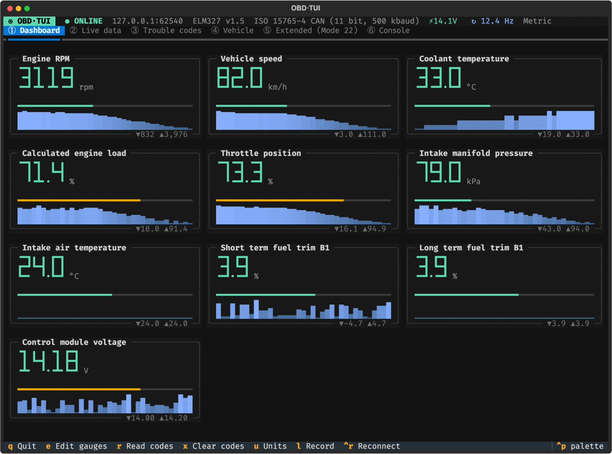

Your check-engine light, explained.
elm327obd turns a cheap ELM327 Wi-Fi adapter into a full OBD2 scanner in your terminal: trouble codes in plain English, live sensor data, readiness monitors and manufacturer PIDs. Free and open source for macOS and Linux.
Look up a trouble code
The same guidance the app shows, for 2,066 generic codes. Nothing leaves your browser.
- Try
Loading code list…
A live dashboard on the road

What it reads
- Trouble codes from every module
- Stored, pending and permanent codes from the engine, transmission and every other module that answers, sorted most urgent first with likely causes and what to check.
- Live data
- Every Mode 01 PID your car supports, with min/max and a trend line, plus CSV recording for a drive you want to look at later.
- Readiness monitors
- See whether the car would pass an emissions inspection before you take it in, along with freeze frame, VIN and calibration IDs.
- Manufacturer PIDs (Mode 22)
- Profiles for Ford, GM and Hyundai/Kia, your own TOML profiles for anything else, and a read-only scanner to find what a module answers.
- A raw console
- Send AT and OBD commands and see decoded replies. Anything that could write to or reset a module asks first.
- Demo mode
- No adapter yet?
obd --demoruns the whole app against a simulated car, with a few trouble codes to explore.
Getting connected
-
Plug in the adapter
The OBD port is under the dash on the driver's side. Turn the ignition on; the engine can be running or not.
-
Join its Wi-Fi
Usually named
WiFi_OBDII,V-LINKorOBDII, with no password or12345678. You'll lose internet while connected; that's normal. -
Run
obdIt finds the adapter on the usual addresses and connects. If it finds more than one, you pick.
Install
You need Python 3.11 or newer. The setup script creates a virtualenv, installs the one
dependency (Textual) and puts an
obd command on your path.
- macOS: tested.
brew install pythonif you need it. - Linux: tested on Debian 12. Debian/Ubuntu also need
python3-venv. - Windows: not supported; WSL is untested.
git clone https://github.com/jeffcaldwellca/elm327-obd.git
cd elm327-obd
./setup.sh
# try it without a car
obd --demo
# explain codes offline
obd explain P0171 P0420What it won't do
It reads data and reads and clears codes. It doesn't reflash or tune ECUs, and an ELM327 isn't the right tool for that: flashing needs a reliable high-speed interface, the manufacturer's security access and the right calibration files, and a Wi-Fi dropout halfway through can leave a module unusable.
The code guidance is general automotive advice, not a diagnosis for your car. A flashing check-engine light always means pull over.